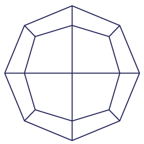
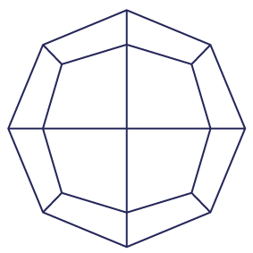

Book Design
Cathodic Corrosion
the little prince of nanoparticles
A thesis book design project that takes a bit of childhood magic and fuses it with the complexity of electrochemistry.
Print Design Visual Procession
Specs
IN A NUTSHELL
Context
Thesis Book Design | Dr. Thom Hersbach (PhD Cum Laude; Leiden University) | Winter 2018
Creative
Victoria Flores
Process
Design Research > Ideation > Sketching/Illustration > Polyhedron Modeling > Design > Iteration > Proof > Print
Tools
Photoshop, Illustrator, InDesign & Stella (Polyhedron Modeler)
Concept (sprout)
Mix formative visions of youth with complex future achievement, both exploring the fundamentals of the universe.
User Experience
I focused on using form and color to create narrative through visual procession, including mirroring across pages, creating continuity through picturesque form, and embedding visual logic within navigation.
The thesis introduces itself to the reader with an explorer (front cover) and closes with a reflective little chemist (back cover). Throughout reading, the reader is introduced thematically to the writers personal inspiration, polyhedron nanoparticles, and tesselations following inherent logic of articles therein.
meta
Type
Display: Voyager by Maarten van 't Wout & Gilles Kergadallan
Intro Body: Calibre by Klim Type Foundry
Chapter Body: Fira Sans and compiled in LaTeX
Copies
One hundred and fifty copies were printed and distributed to the defense committee, Leiden University and Thom's friends, family and colleagues.
Overview
Birds-Eye
Challenge
In the Netherlands, a PhD gets to publish their thesis in a book format. They are given a good amount of creative freedom, aside from a few formal stipulations on intro page order, content, and structure. Many theses are designed by the students themselves in powerpoint! I saw this project as an opportunity to elevate the quality of book design within the electrochemsitry field, but to also design something approachable for any reader on such a complex expert subject.
Approach
I first conducted design research into 'The Little Prince' illustrations and into other theses designs. I then researched nanoparticles, and with the help of Thom, modeled the polyhedrons. As youthful and magical the design is, I wanted its foundation to be exact. I then ventured into iterating on using the polyhedrons as a manchanism for navigation (chapter covers). I soon designed the 'table of contents', tesselations and finally, the binding to integrate the entire visual narrative of discovery.
Goal(s)
Translate the exciting and impactufl essence of the thesis clearly for all reader levels of knowledge. I also sought to integrate the PhD's personal inspiration and research sensibility within the design's essence; most notably referencing 'The Little Prince' by Antoine de Saint-Exupéry and beauty of cathodic corrosion.
Impact
Thom's thesis was called the 'most beautiful thesis design ever seen' by reviewers at his defense, setting the bar high for presentation. He graduated cum laude and his thesis continues to be referenced as the standard within his group at Leiden University.
At a Glance
Binding
Back Cover, Spine, Front Cover and Bookmark
Springboard
Focus
What is corrosion?
Corrosion is the elctrochemiccal degradation of a metal that interacts with its environment. Most corrosion occurs when metals react with moisture in air. This causes the metal to oxidize (lose electrons). While the most well known form of oxidation through corrosion is rusting (iron -> iron oxide), cathodic corrosion is lesser known.
Why nanoparticles/polyhedrons?
Cathodic Corrosion was first descibed ~1900 by Fritz Haber, who observed the formation of large clouds of dust from cathodically (negatively) polarized metals. The topic re-emerged due to growing interest in metallic nanoparticle production. During this nanoparticle production (the rapid switching of positive (anodic) and negative (cathodic) potentials), a cloud of nanoparticles is formed, leaving behind a dramaticaly etched metallic electrode.
The thesis focuses on the invisible portion of this phenomena. So too, the design mirrors the narrative, the nanoparticle cloud is 'visible' while the content focues on the surface etching that occurs on metals such as platnium, rhodium, and gold.
Polyhedron Functionality
> Encodes chapter logic within nanoparticle chapter page tesselations with color referring to metals studied within the chapter.
> Serve as visual navigation (table of contents) -> chapters of the thesis.
> Surfaces content of the thesis phenomena creatively.
> Creates a connective thread cover-to-cover.
> Piques the readers' interest by using nanoparticles as stars and slowly illuminates connection to thesis content.
> Teach the reader a bit about the diversity of nanoparticle forms.
Nanoparticle Visualization
Particles
Visual Research
We knew immediately that nanoparticles would be a great basis for the visual design. I first conducted research into the possible shapes, rotations, and depictions of the set of nanoparticles. As one can imagine, there is a lot of wonderful geometric work relating to these polyhedron structues, from their unfolded nets in origami, to hyper faceted forms in wallpaper decor. We decided to explore their models with software called 'Stella' and extrapolate symmetric perspective rotations of the notable polyhedrons.
Using Stella we extrapolated the 7 notable polyhedrons and all their distinct views from rotation. These stroked forms are the first piece of the puzzle, forming the basis of the 'Table of Contents'.
 


Stars
Upon a Star
After illustrating all of the possible rotations of the polyhedrons we identified the prominent 7 versions we would use to navigate the book's internal design. We then chose a limited palette based on hues in the cover to encode metals within the thesis. We then colored the polyhedrons based on metals within their chapter (breaking the rules every now and then to ensure no color was directly adjacent to itself). Finally, for the cover, I added a white gradient to help the stars pop, contrary to their matte presentations within the thesis.
Final Orientations
Metallic Color Encoding
Watercolour Polyhedrons / Nanoparticles / Stars
Cube
Rhombic Dodecahedron
Octahedron
Trisoctahedron
Tetrahexahedron
Trapezohedron
Hexoctahedron

Chapter Page Development
Tesselations
Inspiration
In designing the chapter page covers, with a referene to their chapter polyhedron (in table of contents), I took inspiration from one of Thom's favorite Dutch artists, M.C. Escher. With his numerous studies on tesselations and impossible constructions, I first did tessleation studies of each polyhedron. I then identified unique formations that differed enough from one another across chapters, colored them with reference to metals contained within the chapter, and 'etched' out a block for the chapter number placement.
After researching other theses designs I realized one of the most difficult parts of reading a thesis is finding sections. Even during a defense, the PhD candidate and committee often have to flip quickly through the book in reference to a question. I opted to solve this navigation problem by creating colorful chapter page covers.


Looking Back
Remarks
Designing this book thesis was an incredibly challenging and intriguing project. I first had to understand the writer and then delve into understanding the complex content in order to bring out the simplest form of its visual magic to make it approachable for all readers. As the writer stressed in his propositions, great content needs great presentation in order to properly convey its message and live on.
I challenged myself to bring all of the researcher’s childhood inspiration and love of chemistry into the design. While trying to elevate the visuals, there were still quite a lot of ‘status quo’ I could not change regarding structure and format. The chapters themselves were created in LaTeX due to limitations in compliation and typeface availability for scientific notation.
Looking back, there is not much I would change regarding the visual procession cover-to-cover. It opens with the curious explorer, investigates particles therein, and closes with the reflective chemist looking forward and upwards. I’m happy I was able to capture some sophistication and youthfulness in the illustration and color palette, while keeping true to Thom’s personality and exactness in all creative freedoms and interpretations of the content.